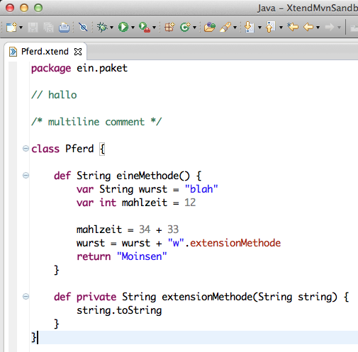
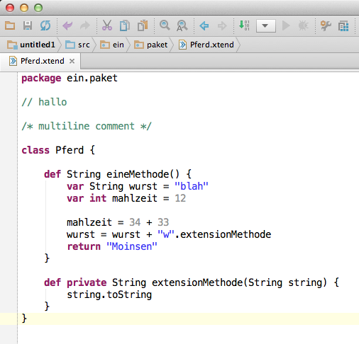

Hello world IntelliJ IDEA Xtend Plugin
I started to write an IntelliJ Plugin for Xtend a while ago and now I am happy to be able to blog about what I have got so far for the first time. Until now there is only basic syntax highlighting available, but it looks already pretty promising. My hope is to be able to do all my Xtend coding in IntelliJ in the future with nice refactorings, error reporting, intentions etc.
Here are two IDE editor screenshots. The first one is the well known Eclipse Xtend Editor.
The second IntelliJ IDEA with Xtend support! :-D
Until now there is no official release out and I guess it will also take quite some time until then. There is still a lot to do and I don't have much time to work on the plugin. The plugin has to evolve little by little. You can find the source code on github if you are interested in the development.
Date published: 2013-03-22
Date modified: 2013-03-22
Keywords: Languages, IntelliJ, Xtend